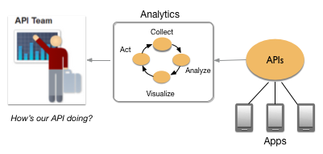
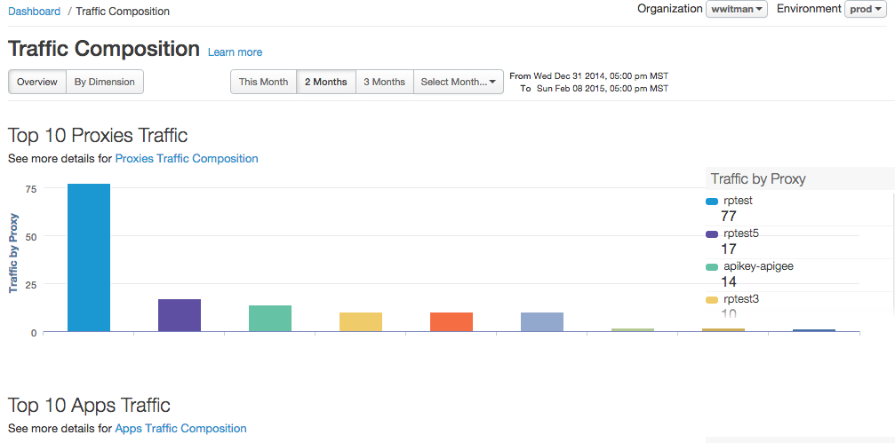
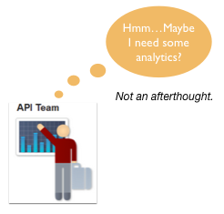
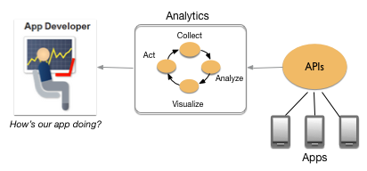
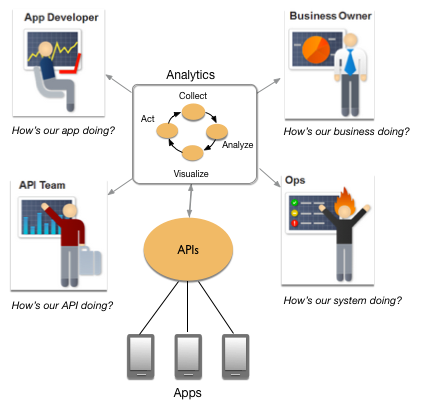

[toc]
This topic introduces Apigee Edge Analytics Services.
Apigee Edge Analytics Services collects and analyzes a wealth of information that flows through APIs. This information is gathered, analyzed, and provided to you immediately, in real time. How is your API traffic trending over time? Who are your top developers? When is API response time fastest? Slowest? Are you attracting more developers? Geographically where do you see the most API traffic?
The answers to questions like these help you improve your APIs, attract the right app developers, troubleshoot problems, and, ultimately, make better business decisions related to your API program.
Let's say your API has gained wide adoption. It's popular. You have attracted a number of talented, creative app developers and people are downloading and installing their apps. Obviously, the API team is very interested in how the API is performing, how it's being used, and how to plan for improvements.

To plan those improvements, the API team needs to know as much as they can about how the API is used in the real world. How is it performing? Who is using it? What are the traffic patterns? They need insight. They need to know:
Through a continual process of collecting, analyzing, and visualizing API metrics, Analytics Services helps your API team act to improve their APIs. Out-of-the-box, Analytics Services supports and encourages this pattern of collect, analyze, visualize, and act.
Analytics Services collects and analyzes a broad spectrum of data that flows across APIs. For example, while your API is deployed, the analytics system is constantly counting and analyzing metrics like the number of messages received, number of developers, response times, errors, number of apps in use, request size, and many others. For a good introduction to metrics and how you can use them, see http://docs.apigee.com/node/428. For a complete listing of metrics, see http://docs.apigee.com/node/8409.

You can also create custom metrics by wiring together features of Analytics Services and API Services. For example, you can create a policy designed to extract certain information from an API (from request headers, for instance). Once extracted, you can use the analytics API to analyze and return the data. For example, you might ask: When does the highest response time usually occur for a specific API? The answer to a question like this might help your Ops team plan for anticipated network loads. See http://docs.apigee.com/node/4554 for a nice end-to-end example demonstrating this technique.
You've stored and collected metrics on system performance, you've collected error logs, you've collected user data, and you've collected many other kinds of data related to your business systems and the applications that run on them. Often this data is collected and stored in data warehouses where it is organized and possibly analyzed in predictable ways according to traditional models like ETL (extract, transform, load).
With the rapid adoption of APIs and a mobile apps economy, understanding what to measure is less predictable than it once was. Third-party app developers have access to your APIs. Users are on the go. They have smart phones, tablets, and other mobile devices. Some may never use a browser. In this rapidly shifting environment, you need to know exactly how, when, and where they are interacting with your APIs. You need to know how your APIs are performing right now, in real time.
Video: For more about this perspective, check out this short video. It explains how API data is a new breed of data, that exists at the edge of your enterprise, and that is critical to the success of your API program.
Apigee encourages API teams to put analytics up front. Think of analytics as your API's peer, as an integral part of your API program from the beginning, not as something you consider or decide to add later in your API program.

Analytics can provide key information at the beginning of your API program to help you improve your API and the experience of app developers who use it. As your API program matures, analytics lends insight that can inform key business decisions.
Analytics Services provides several visualization tools, including the Dashboard, custom reports, GeoMap, and tools that visualize trends in API proxy performance. For now, let's take a quick look at three of these tools: the Dashboard, proxy resource performance view, and custom reports.
The analytics Dashboard gives an overall view of your entire API program. You can toggle the dashboard between the API program view, which gives you a sense of overall API performance, and API top performer view, which tells you about your top performing APIs, apps, developers, and API products. You can select a time interval (hour, day, week, month) over which the data is plotted or specify a custom timespan. You can also mouse over any point on a plot to see in greater detail what was happening at that point.
You also can track performance metrics for individual URIs (resources) for a specific API proxy on the Performance tab for any API proxy in the proxy editor.
The custom report feature lets you select, combine, filter, and drill down into specific API metrics. You can generate reports that contain the exact data that you want to see. Reports can be viewed in the UI, exported to CSV, PDF, or PNG files. In addition, you can create your own analytics dashboard and populate it with custom reports that you select.

For more information about the visualization tools provided by Analytics Services, see http://docs.apigee.com/node/17. For more information on custom reports, see http://docs.apigee.com/node/338.
Using the Analytics Services API, you can access a wide variety of operational and business data that flows across your APIs. For example, using REST calls, you can determine which APIs are performing well or poorly, which developers are delivering the highest value traffic, and which apps are causing the most issues for your backend services.
You can use the REST API when you need to automate certain analytics functions, such as retrieving metrics periodically using an automation client or script. You can also use the API to build your own visualizations in the form of custom widgets that you can embed in portals or custom apps. The API can also be used to provide custom analytics to certain app developers or communities of app developers.
Here's an example analytics REST API call:
$ curl https://api.enterprise.apigee.com/v1/o/{org_name}/environments/test/stats/apiproxy?"select=sum(message_count)&timeRange=6/24/2017%2000:00~6/24/2017%2023:59&timeUnit=hour" \
-u email:password
This call tells you how many request messages were received on an hourly basis, grouped by all API proxies, on 6/24/2017 (00:00 to 23:59 UTC time). (%20 is a URL-encoded space.)
To read all about the REST API for analytics, see http://docs.apigee.com/node/428.
When you think of app developers as your customers, you'll want to make sure they have the tools and information available to them to make the best use of your API. Ultimately, you want the people who use their apps (and your products and services) to be happy.

Analytics Services provides a wealth of information that app developers can use to improve their apps. App developers are not only concerned about the quality of their apps, they are very interested in your API. How is it performing? Is it error prone? Is it sometimes unavailable? How does it respond to traffic spikes? Answers to these questions are crucial to the app developer who wants to deliver the best possible experience to her (your) customers!
First, the developer portal includes an optional App Performance page designed to give app developers access to important metrics for their apps. This page gives developers information about:
You can also create custom reports and share them with your app developers. For more information, see http://docs.apigee.com/node/338.
Finally, organization administrators can use the analytics management API to capture data over a wider period of time to share with app developers offline. For more information, see http://docs.apigee.com/node/428.
Organization Administrators can opt in and out of being emailed daily analytics reports. In the management UI, select username > User Settings, and select or deselect the Receive daily analytics summary report option. You can also use the /stats/preferences/dailysummaryreport API to subscribe or unsubscribe from daily analytics emails. For example, to opt out, use:
https://api.enterprise.apigee.com/v1/organizations/{org}/stats/preferences/reports/dailysummaryreport?optin=false
With the analytics tools provided by Apigee, you can collect and monitor a lot of data, which can be overwhelming. Apigee recommends that you start slowly by collecting and analyzing a few key metrics. Use what you learn to improve your APIs and the apps that use them. As you are successful, you can collect and analyze more data to make further improvements. Ultimately, API analytics can provide a powerful 360-degree view of your entire API ecosystem and help you improve your overall business.
From the app developer to the business owner, API analytics help everyone improve.
